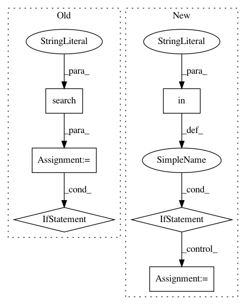

8561e951aa162ef48ef73ba78f675cfe88f0c180,qcengine/programs/turbomole/harvester.py,,harvest,#Any#Any#,7
Before Change
// Check for DFT, default to HF
energy_key = "HF TOTAL ENERGY"
dft_mobj = re.search("density functional", stdout)
if dft_mobj:
energy_key = "DFT TOTAL ENERGY"
qcvars[energy_key] = total_energy
// Take into account energies from ricc2 runs. They will be different
// from the HF energy.
After Change
ref_energy_dict = parse_reference_energy(stdout)
qcvars.update(ref_energy_dict)
if "R I C C 2" in stdout:
ricc2_dict = parse_ricc2(stdout)
qcvars.update(ricc2_dict)
gradient = None
hessian = None
return qcvars, gradient, hessian
In pattern: SUPERPATTERN
Frequency: 3
Non-data size: 6
Instances
Project Name: MolSSI/QCEngine
Commit Name: 8561e951aa162ef48ef73ba78f675cfe88f0c180
Time: 2019-09-25
Author: jsteinmetzer1108@aol.com
File Name: qcengine/programs/turbomole/harvester.py
Class Name:
Method Name: harvest
Project Name: mlpack/benchmarks
Commit Name: a60c0d90de304b8d2768da0e2110527edea96910
Time: 2017-06-29
Author: ryan@ratml.org
File Name: methods/scikit/linear_ridge_regression.py
Class Name: LinearRidgeRegression
Method Name: RunMetrics
Project Name: mlpack/benchmarks
Commit Name: a60c0d90de304b8d2768da0e2110527edea96910
Time: 2017-06-29
Author: ryan@ratml.org
File Name: methods/shogun/linear_ridge_regression.py
Class Name: LinearRidgeRegression
Method Name: RunMetrics